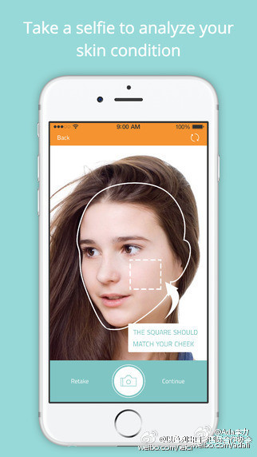

#创业#看了十几个护肤类App，只有以色列的针对痤疮管理的ＭDacne让人眼前一亮。
1. App使用很流畅，收集信息拍照让用户觉得是很自然的过程
2. 拍照分析后，给出面部痤疮评估，这里有大数据的支持。
3. 评估后，给方案，这页的业务介绍很值得学习。痤疮治理的各项措施介绍得很全面。
评估结果对我来说无意义，完全不是我的肌肤状态。说明用户自己手机拍照做皮肤分析这事情，还是不大靠谱。
1. App使用很流畅，收集信息拍照让用户觉得是很自然的过程
2. 拍照分析后，给出面部痤疮评估，这里有大数据的支持。
3. 评估后，给方案，这页的业务介绍很值得学习。痤疮治理的各项措施介绍得很全面。
评估结果对我来说无意义，完全不是我的肌肤状态。说明用户自己手机拍照做皮肤分析这事情，还是不大靠谱。
- 